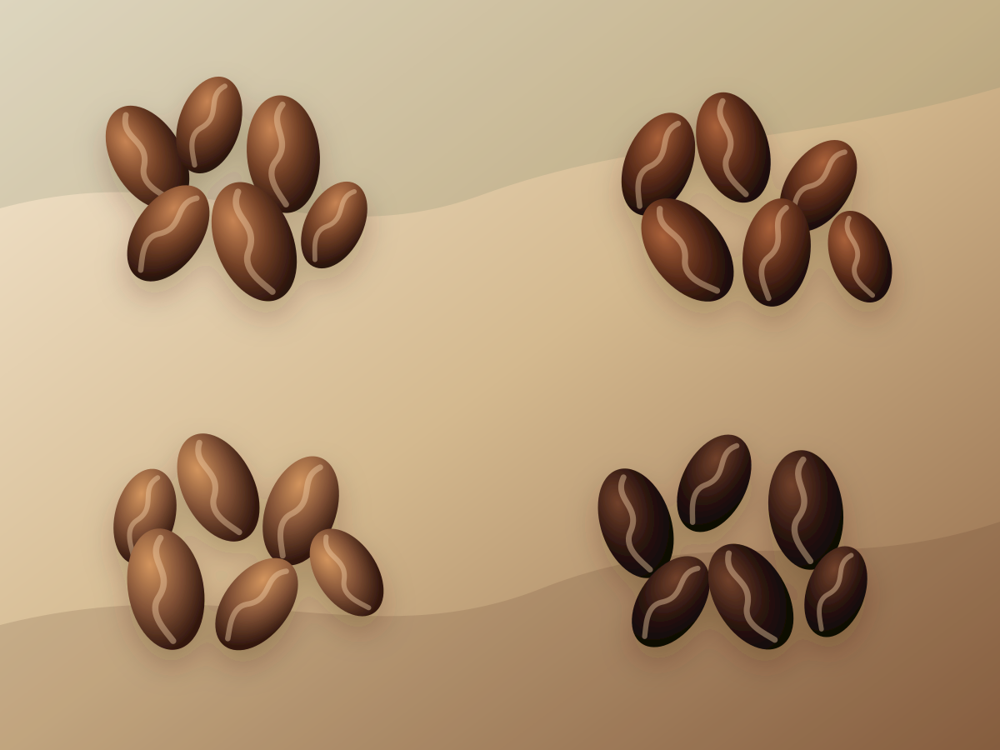

Arabica
Most specialty coffee comes from Arabica. It usually has more aroma, acidity, sweetness, and origin clarity.
Origin library
Browse origin stories, growing places, flavor profiles, and tasting notes, then pair the bean with a grind style that helps it shine.

Most specialty coffee comes from Arabica. It usually has more aroma, acidity, sweetness, and origin clarity.

Robusta is stronger, more bitter, higher in caffeine, and prized for body and crema in espresso blends.
.jpg)
Liberica has large beans and a bold, unusual profile that can taste woody, smoky, fruity, and floral.
.jpg)
Excelsa is commonly treated as a Liberica variety, known for tart fruit, depth, and a distinctive finish.
Born from ancient arabica forests, Ethiopian heirloom coffee carries a wild, floral identity shaped by small farms and careful drying beds.

This variety is grown on steep Andean slopes where family farms wash and ferment cherries for clarity, sweetness, and balance.

Slow sun-drying on wide patios gives Brazilian bourbon a dessert-like comfort, making it a favorite foundation for espresso blends.

Wet-hulled processing and humid mountain farms create a dense, savory coffee with a deep character and a long, spicy finish.

Selected for drought resistance and cup quality, SL28 became one of Kenya's most recognizable coffees through cooperative washing stations and meticulous sorting.

Antigua coffee grows between volcanoes, where cool nights and mineral-rich soil create a steady sweetness that works beautifully as a daily cup.

Tarrazu producers are known for precise milling and honey processing, creating coffees that bridge crisp fruit and rounded sweetness.

Geisha became famous in Panama for its perfume-like aromatics and delicate structure, especially from high farms near cloud forest conditions.

Rwandan bourbon is often processed through community washing stations, giving smallholder harvests a clean and polished fruit character.

One of coffee's oldest trade identities, Yemen Mocha is shaped by terraced mountain farms, dry processing, and intensely concentrated cherries.

Exposed to humid monsoon winds after harvest, this Indian coffee becomes pale, low-acid, and unusually heavy in the cup.

Chiapas coffees often come from small farms near forested highlands, offering a soft, approachable profile for everyday brewing.
Robusta is central to Vietnam's coffee culture, thriving in warmer lowland farms and bringing the strong base used for phin coffee and espresso crema.

Uganda is part of Robusta's natural home, where hardy coffee trees produce dense beans that can add structure and punch to blends.
Barako is a beloved Liberica identity in the Philippines, known for large beans, powerful aroma, and a taste that stands apart from typical Arabica.

Liberica has deep roots in Malaysia, especially in farms that value its resilience, large leaves, and unusually fragrant cup character.
Excelsa is often classified as a Liberica variety, but roasters treat it separately because it brings tart fruit and a layered finish.

Stenophylla is a rare West African coffee species gaining attention for climate resilience and a cup quality that can resemble fine Arabica.

Racemosa is a low-caffeine wild coffee species from southern Africa, more often seen in research and specialty experiments than everyday cafes.

Catimor families combine Arabica cup potential with Robusta-related disease resistance, making them important in farms facing leaf rust pressure.